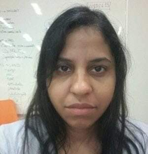
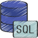
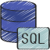
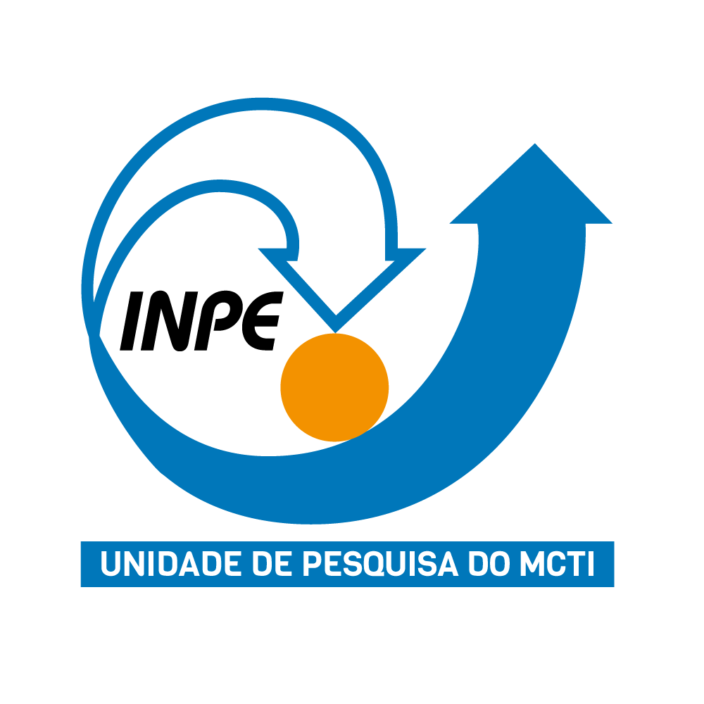

Josiane Silva
Analista de Sistemas
Desenvolvedora Full Stack
Bem Vindos!
Sou Josiane da Silva, formada em Tecnologia da Informação. Trabalhei como assistente de pesquisa e analista de sistemas, onde adquiri conhecimento e experiência em manipulação, processamento, visualização e análise de dados (Linux, Shell script, CDO, Python). Também tenho conhecimento em Mysql, Sql, PHP, Html5, Css3, Javascript, Git e Github. Atualmente estou focando meus estudos em desenvolvimento web (backend e frontend).

Formação Acadêmica
Tecnologia em Informática - Banco de dados
Fatec - Faculdade Prof. Waldomiro May
jul 2008 - jul 2011

Cursos Extracurriculares
Computação de dados ambientais
Aplicação de métodos estatásticos
Network Securyt 70h - 2022
CCNA1 Introdução a Redes 70h - 2022
Fundamentos em Cibergurança 30h - 2022
Habilidades

 



Experiências

Instituto Nacional de Pesquisas Espaciais - INPE
- Bolsista FAPES - DTI-A (jun 2020 - jan 2021)
- Bolsista FAPES - DTI-A (mai 2019 - abr 2020)
Ambar Technology
- Analista de sistemas (abr 2017 - mar 2018)
Instituto Nacional de Pesquisas Espaciais - INPE
- Bolsista Cnpq - EXP (abr 2016 - mar 2017)
- Bolsista Cnpq - EXP-B (abr 2015 - mar 2016)
Instituto Nacional de Pesquisas Espaciais - INPE
- Bolsista Cnpq - PCI-DD (mai 2012 - abr 2015)
- Bolsista Cnpq - Iniciação Científica (jun 2010 - mai 2011)